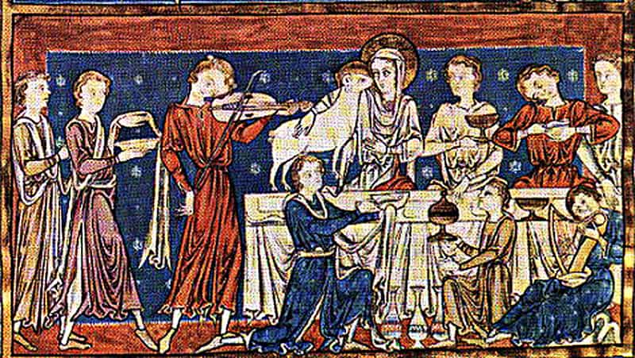
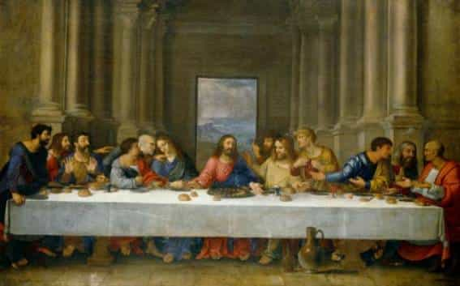
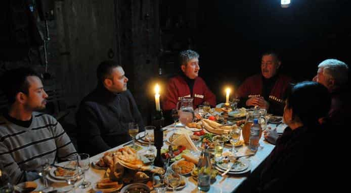
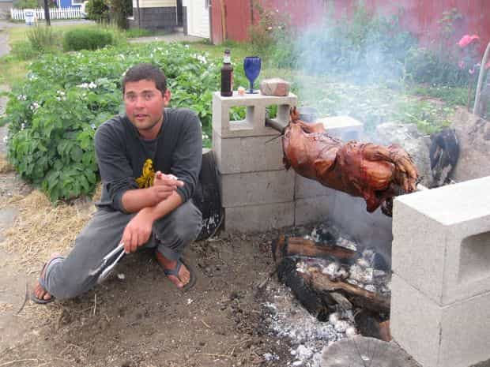

< < < Back
4 Reasons To Host A Feast – Return Of Kings
Every civilisation around the globe has a tradition of feast. More than a vulgar meal, it is a celebration of life. In times when man struggled to find something to eat, a feast was something truly exceptional. Nature was generous enough to allow him to see another day and even going to sleep without feeling the cold bite of hunger, surrounded by his loved ones.
Sharing food for a moment of peace. A feast has usually two main goals: celebrate friendship and celebrate God.

Kings and peasants. Love and hate. Return of a son or farewell to a beloved elder. The feast was a concentration of what makes mortal life what it is. The greatest alliances were forged and strengthened in the mead halls. It is also under the same roof that plots and treason took place.
This habit disappears in our world. With parents drifting away from their roots and generations of children locked in their bubble, feasts become rare. It must be reinstated as a central element of a man’s life. A man needs to be a fighter, a father, a creator but also a host. Among the many benefits that hosting a feast will bring to your life:
1. It separates friends from the rest

Oaths of friendships and insults resulting in blood feuds did not need to take place on battlefields or in the market place. Bring the wrong or the right men and women. Let the drinks flow and the mood evolve. Truth to many questions will soon emerge. Bear that in mind. A good host is a focused host.
You invest time, energy, and money into something that is not vital. Guests not showing gratitude should not be forgiven. True colours are revealed around bread and wine. Observe who among your guests comes empty handed. Do not remind them to bring something. It is common sense and a good test for the future.
I once organised a feast of my own after a long absence overseas, bringing new recipes and drinks for my childhood “friends” to enjoy. They did not appreciate it. “What is that shit? Let’s watch TV” was the response.
It was a bad but necessary omen. I cut ties except for one of them and reconstructed a new tribe. A late toastmaster I knew always said: “Guests always please me. If it is not when they arrive, then it is when they leave.”
2. It is a real as it gets

Sharing food, the source of life, is an important, almost sacred, gesture. The nations that respect the act of sitting down and taking the time to eat are usually the most stable and conservative ones. The “fast food” phenomenon is just another way to disconnect humans from their true nature.
It is a simple and effective way to meet in today’s artificial relationships. Too many friends meet up for drinks outside of their home, where they still put on an act for the outside world.
Even if it is necessary, the material, the setting, the decoration is not the most important. You are not a woman. What matters is to gather like-minded people and having good food served.
Feasts have always been a display of wealth, financial or otherwise. Spending too little or too much says a lot to the guests. The reaction of the guests to this display is equally important. If the feast is not as rich as in the past, friends will inquire where acquaintances will only criticize
3. It celebrates simplicity

We come back to the basics in this age of technology, virtual reality and white noise. The pillars of happiness are all present during a good feast. Friends, home made food and drinks, a pleasant mood and free time. The absence of bonding around a meal that has no professional or romantic context is another symptom of the cultural decline of a society.
There is an important rule in a feast, You must be the core and the main provider. It cannot happen under a roof that is not yours. You need to be in control of your surroundings. A man is the king in his house.
A modern feast is also cheap. Cheaper than an evening in an overpriced club, navigating between bitch-shields and thirsty betas. Cheaper than noisy restaurants with crying toddlers, where you have to tip poor service just because “that is the way it is.”
It can be organised anywhere. You do not need much. Without a roof, an open fire, a few crates, fresh food and the leaves of the trees as tiles will make anyone a cheerful guest.
4. It is useful spiritually and materially

Everyone loves free food, but above all every man needs a tribe. But hosting is a commitment. You said you will, and you will stick to it. Flakiness is a woman’s trait.
It is good exercise for time and human management. You need to plan ahead, delegate tasks, monitor your guests so that their plate and cup are full and that they are in good spirits.
It is also the host’s task to direct the debates, keep the conversation going and make sure that everyone is roughly on the same level of drunkenness. The host is a toastmaster, a referee, and a guardian.
There is no better way to consume alcohol than in a safe environment of a feast. Nothing is worse than getting drunk on an empty stomach.
Un dernier mot

One of the few drawbacks of a feast is that the host, by doing what he is supposed to: organise, has the less fun as he keeps an eye of everything. That is the price to pay, but only for an evening. Soon, he shall be a guest again, free of responsibility.
There are many ways to be a talented host, but the universal elements of a memorable feast have seldom changed since man invented the table:
- Don’t improvise with dishes you do not know
- Have enough of everything but do not plan too big
- Give your guest a drink when he arrives
- Make a list of what you need
- Stay cool
- Play music in the background (not too loud)
- Host your guests after the feast if possible
- Bring enough cutlery
- Bring girls (assessing the risks before) for your fellow hunters if you can. What goes around comes around.
- No visual distractions (No TV, turn off the wifi, phones away)
If your feast is successful, it will stays in the memory of your guests for years to come.
Read More: The Feast Of The Ascension